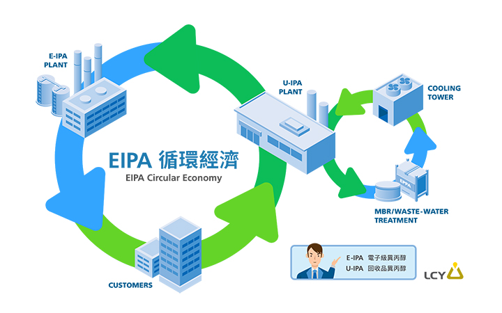
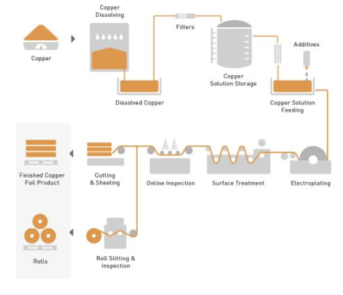

As the fight against climate change becomes increasingly important, technology companies are focused on becoming more sustainable. For example, Apple has pledged to go entirely carbon neutral by 2030. That’s why LCY Chemical, LCY Technology, and REnato lab are committed to finding the best ways to use resources within a circular economy.
In the last five decades, global demand has more than tripled, yet natural resources are finite. This has resulted in rising prices for many raw materials. At the same time, many manufacturing processes produce carbon emissions, exacerbating global warming. These stresses have pushed many companies to focus on sustainability more than ever before.
Taiwanese companies are aiming to be part of the drive toward sustainability. LCY Chemical and LCY Technology provide key solutions for the electronics industry, while REnato lab occupies a very different position on the value chain, specializing in the development and application of environmentally friendly materials. These three businesses have come together to discuss how the power of a circular economy can relieve the impact of resource shortages and climate change.
LCY Chemical Deploys EIPA Dual-Cycle Circulation Process to Achieve Carbon Neutrality
“Waste management and climate change are two major challenges in semiconductor manufacturing process,” stated Roger Chen, Vice President of the electronic materials business in LCY Chemical. With the increasing sophistication of high-end semiconductor processes, requirements for wafer cleaning have become ever more demanding. As pure water and chemical solvents are being used in ever larger amounts, waste is also increasing. To lower the overall environmental impact, sustainable thinking should be injected into every step in the product lifecycle.
 How the EIPA Circular Economy process works.LCY Chemical has achieved their electronics-grade isopropyl alcohol (EIPA) dual cycle model. And LCY Chemical is the first company worldwide that has improved the traditional recycling and treatment methods of isopropyl alcohol waste in the wafer fabrication process. There are two cycles in LCY's Dual Cycle circular economy model.
The first cycle assists downstream clients to recycle isopropyl alcohol waste, which is distilled and purified into electronic-grade isopropyl alcohol. In the second cycle, LCY Chemical completely recycles wastewater, filters impurities with membrane bioreactors, and reuses the water within the factory. These bioreactors have hollow fiber membranes with 0.05-micron pores, which filter out impurities and pollutants in the wastewater. The recycled water can be used to cool production processes. And the recycled water is of a quality comparable to domestic water. In fact, LCY Chemical uses recycled water in the fish pond in their Linyuan Plant. “LCY Chemical is planning to build another EIPA plant in Arizona, in the United States. We look forward to making a bigger difference for the environment,” Chen adds.
“LCY's dual cycle circular economy system is a model of how companies in different parts of the value chain can work together to tackle waste and water shortages,” Jackie Wang, Founder of REnato lab notes. “A closed-loop system means that companies produce zero wastewater and zero chemical waste.”
He also notes that the circular economy is best achieved by collaborative efforts throughout the value chain, as different stakeholders can devise ways to use resources circularly rather than linearly.
LCY Technology Finds Solutions with Value Chain Partner
Manufacturing everyday items, like cars, mobile phones, and computers, would not be possible without the materials industry. Advances in materials technology have continued to make our life much easier. However, the cost of raw materials is rising, which makes it necessary to recycle and reuse high-tech materials. This presents technological challenges. “From waste management and disposal to recycling and reuse, environmental impact needs to be minimized at every step of a product’s life cycle,” says Seng Wui Lim, Chairman of LCY Technology.
LCY Technology is a major electronics materials supplier. The company plays a critical role in supporting the circular economy by approaching product design with a mindset of stewardship. First, copper wire is 100% recycled from waste cables instead of being mined, leaving zero impact on the environment. Second, environmentally friendly bio-based chemicals are used in its development and manufacturing processes to remove impurities. Finally, over the last 12 months, the company has cut its energy and water consumption down by 7 percent and 14 percent respectively. Moreover, the volume of waste sludge has dropped by more than 33 percent.
 Flow Chart of Green Copper FoilWang of REnato lab notes that his company helps electronics companies to recycle and reuse waste circuit boards. By working with waste treatment companies, they first recycle any gold, silver, copper, or other precious metals, and then break down the fiberglass substrate so that it can be reused as a building material. “We recycle waste circuit boards, while LCY Technology recycles waste copper wire. Both companies are maximizing the use of resources.” Wang emphasized that the circular economy realizes its highest potential when things are recycled or reused. He also called for companies to continue to innovate and look for new business models.
REnato lab founder Jacky Wang believes the circular economy realizes its highest potential when things are recycled or reusedClimate change is an urgent issue facing humanity. It has made the technology industry accelerate its move toward sustainability. As key partners of technology companies, LCY Chemical and LCY Technology are adopting the circular economy approach and reducing their carbon emissions and resource waste. Both companies aim to team up with more partners along the value chain to find solutions to climate change.
LCY is committed to implementing a circular economy approach to reduce carbon emissions and waste.